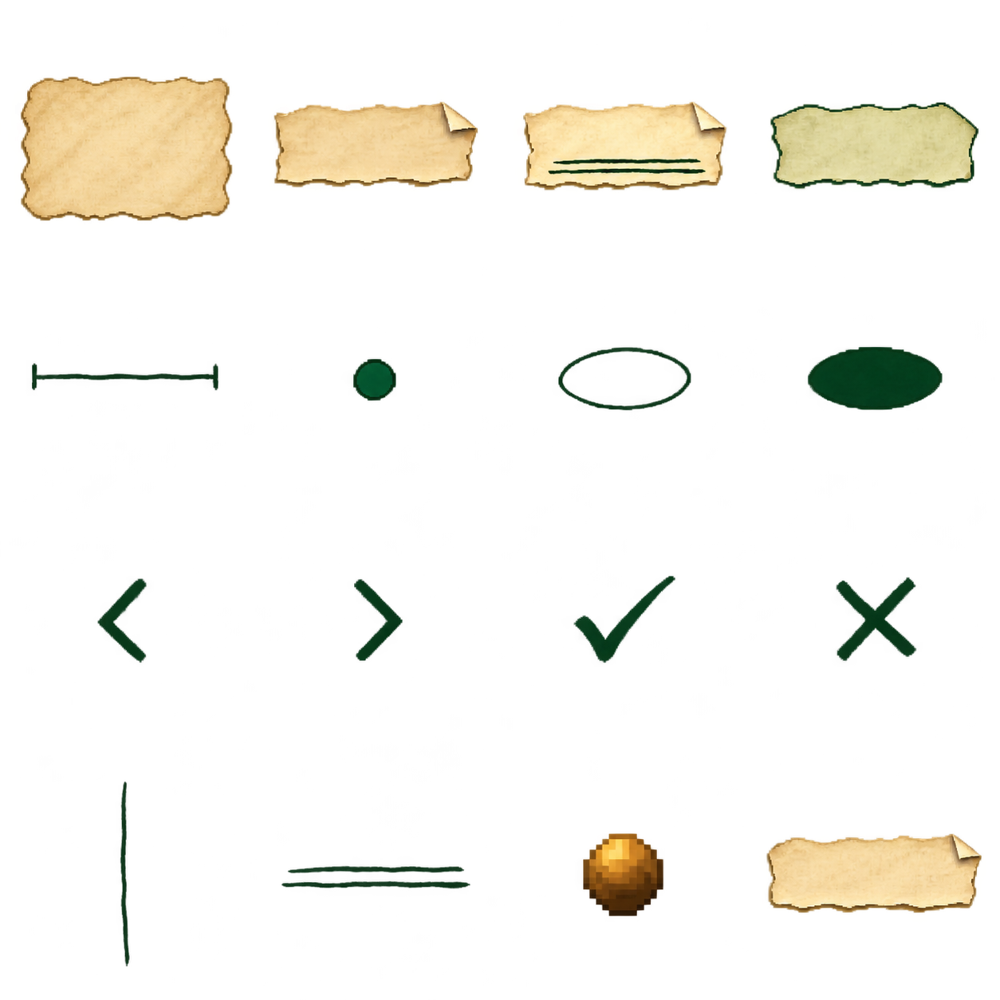
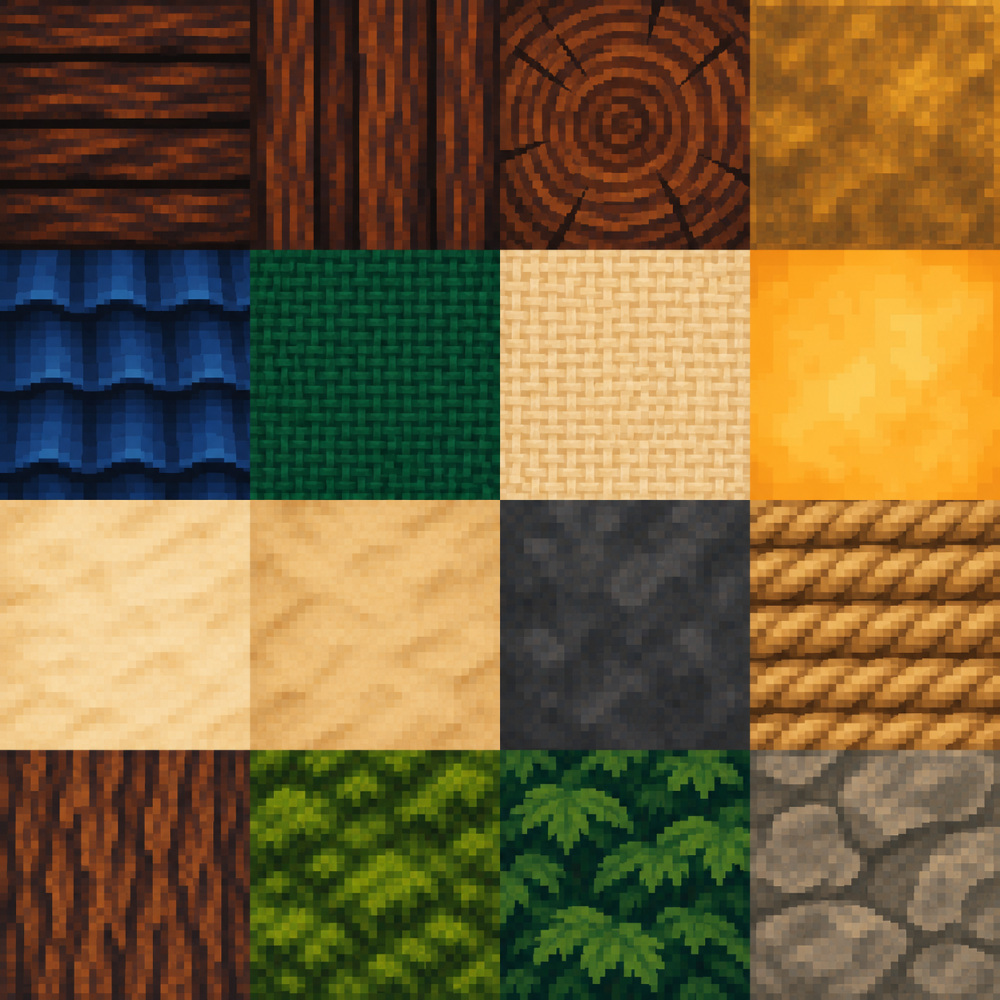

← Concepts de UIOpções · Papel e caneta / PSX
Dois atlas e 32 regiões. Textos ficam separados, na engine.
Baixar pacote · Mapa de recortes · LEIA-ME
atlas-ui-opcoes-psx-v1

- painel pergaminho
- papel botao normal
- papel botao selecionado
- papel botao hover
- slider trilho
- slider marcador
- oval contorno
- oval preenchido
- seta esquerda
- seta direita
- confirmar
- cancelar
- divisor vertical
- sublinhado duplo
- pino latao
- papel acao largo
Baixar PNGatlas-materiais-opcoes-psx-v1

- madeira pranchas
- madeira vigas
- madeira topo
- latao
- telhas azul marinho
- tecido jade
- tecido marfim
- vidro ambar
- papel marfim
- papel envelhecido
- ferro escuro
- corda
- casca arvore
- musgo
- folhagem
- pedra base
Baixar PNG